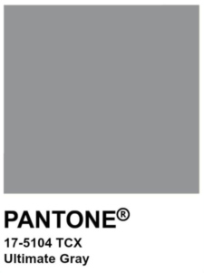

Главные цвета 2021 года — «безупречно серый» (Ultimate Gray) и «озаряющий» (Illuminating) — символизируют стабильность, единство и надежду. По словам Леатрис Айзман, исполнительного директора Института цвета Pantone, серый — цвет надежности. Так Pantone хотят вдохновить людей на то, чтобы «увидеть изменения, метафорически и буквально, так как облака над головой часто сменяются солнечным светом».